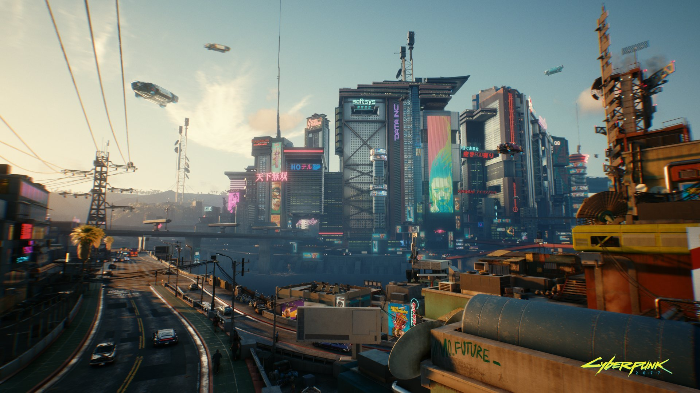
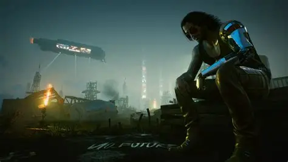

Bienvenido a Night City

Cyberpunk 2077 es un videojuego de rol y acción desarrollado por CD Projekt Red. La historia se desarrolla en Night City, una ciudad futurista llena de tecnología y corporaciones.
El jugador controla a V, un mercenario que intenta sobrevivir y hacerse un nombre dentro de Night City.

Johnny Silverhand es uno de los personajes importantes de Cyberpunk 2077.
¿Cómo se llama la ciudad donde se desarrolla principalmente Cyberpunk 2077?
¿Quieres dejar un comentario?